内容要点
一段 14 分 55 秒的达芬奇二级调色课，聚焦如何分离画面不同元素并进行独立精准塑造，从校正走向创作。①前置流程：S-Log3→CST色彩转换→一级曝光白平衡→风格LUT（模拟胶片）→手动微调（色轮压高光提亮暗部+键输出调LUT浓度）；整体色调打好基础再做二级。②曲线工具：色相对色相（渐变色带+控制点，只改目标色）、色相对饱和度（吸管吸救生圈→上拉增饱和，可只留橙红其余归零）、色相对亮度（上拉变亮/下拉变暗浓郁）、亮度对饱和度（降低暗部饱和度避免脏乱）；吸管取样+锚点+扩选区+直方图凸起定位；顺序=矫正LUT后做局部（log素材反差弱选区不准）。③限定器（抠像）：吸管点选+Shift+H预览+加减吸管+色相/饱和度/亮度三参数+门板优化（羽化/黑白场/模糊半径）第二页阴影高光中间调。④多种抠像：亮度抠像（并行节点Option+P选暗部脏区+蓝绿微调降饱和）、RGB抠像（三通道）、3D抠像（多色同时选）。⑤门板+跟踪：窗口蒙版模板+云跟踪（大量跟踪点共同运算）；选区不精确时结合门板覆盖+跟踪；马赛克打码；遮挡跟踪两步解决（遮挡前最后一帧关键帧+重现后对齐再跟踪）；蒙版四关键帧（正常→缩小隐藏→保持最小→恢复）平滑过渡。⑥AI智能抠图：点击头发/皮肤/衣服自动识别生成蒙版+跟踪，三层图层节点分解主体，调发色/皮肤提亮美白磨皮/衣服压深偏粉；AI抠图+Alpha输出+字幕入场转场=前景人物文字背景层次。总结：抠像/跟踪/AI抠图都是为了局部精确控制。
知识结构
分离人物光影环境独立塑造，从校正走向创作。
S-Log3→CST→曝光白平衡→风格LUT→色轮微调。
色相对色相；吸管取样+锚点扩选区；矫正LUT后操作。
吸管救生圈上拉增饱和；只留橙红其余归零。
色相对亮度明暗；亮度对饱和度降暗部脏乱。
吸管+Shift+H预览+三参数+门板优化。
并行节点选暗部；三通道；多色同时选。
云跟踪+马赛克；遮挡两步解决+四关键帧。
限定器抠肤色优化磨皮提亮。
头发皮肤衣服分层节点；创意字幕特效。
二级调色=先打好整体色调，再用工具分离画面元素独立塑造。①前置：S-Log3→CST→一级曝光白平衡→风格LUT→色轮微调（压高光提亮暗部）→键输出调LUT浓度贴合素材。②曲线四类：色相对色相（渐变色带控制点只改目标色）、色相对饱和度（吸管上拉增饱和、只留橙红其余归零强冲击）、色相对亮度（上拉变亮下拉浓郁）、亮度对饱和度（降暗部饱和避免脏乱）；吸管取样+锚点+扩选区+直方图凸起定位；操作顺序=矫正LUT后再做局部（log素材反差弱选区不准），并行节点+标签备注。③限定器抠像：吸管点选+Shift+H预览+加减吸管+色相/饱和/亮度三参数+门板优化（羽化/黑白场/模糊半径）第二页阴影高光中间调+反向。④抠像方式：HSL/亮度（Option+P选暗部脏区）/RGB（三通道）/3D（多色同时选）。⑤门板+跟踪：窗口模板+云跟踪；选区不精确结合门板覆盖跟踪；马赛克打码；遮挡跟踪=遮挡前关键帧+重现后对齐再跟踪两段独立；蒙版四关键帧平滑过渡（正常→隐藏→最小→恢复）。⑥AI智能抠图：点头发/皮肤/衣服自动生成蒙版+跟踪，三层节点分解主体分别调色；AI抠图+Alpha输出+字幕转场=创意前景层次。
00:00-00:55二级调色总览
定义：「二级调色的挑战不再是整体校正，而在于如何分离画面中不同元素比如人物、光影、环境，并对他们进行独立精准的塑造，这正是调色从校正走向创作的关键一步。」
目标：「这节课我们会聚焦在分离本身，系统掌握多种局部调整的思路和技巧，学习如何将不同的工具协同工作，干净利落的锁定你想调整的区域。」
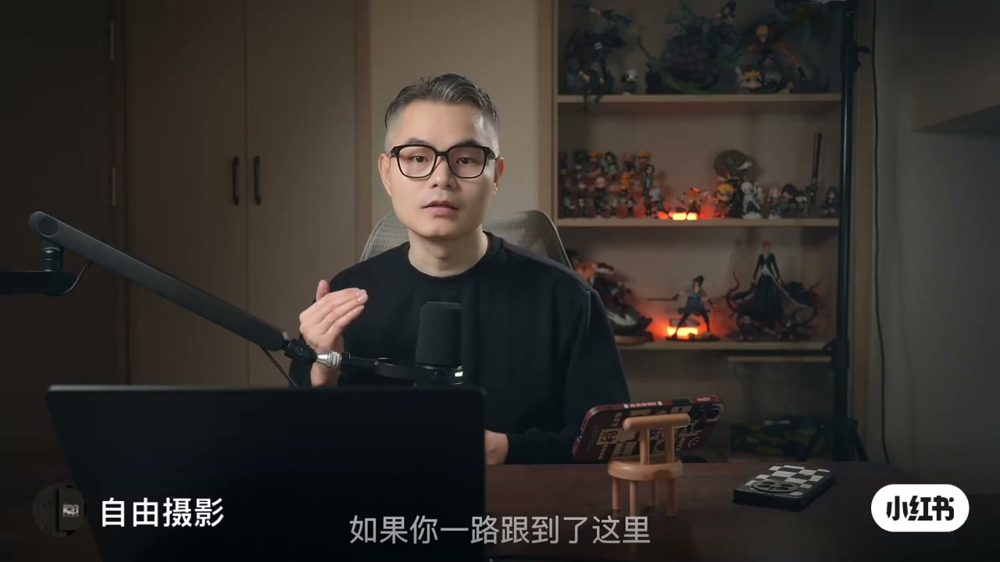
00:55-02:11前置流程
时机：「二级调色的目的是对画面特定部分进行独立调整，无论是人物的肤色、环境色还是某个物体都属于这个范畴，它通常发生在整体基本色调确定好之后。」
步骤：「先创建一个节点应用s-log3转rec.709的色彩转换lut，接着在第一个节点应用矫正lut之前，先调整全局曝光和白平衡，确保画面在矫正阶段没有过曝或偏色。得到色彩与明暗都正常的画面后，再创建一个新的节点套用一个风格lut比如模拟胶片色调。套用lut之后画面通常已具备不错的基调，但lut并非万能，往往还需要手动微调，通过色轮压低高光和提亮暗部让画面显得更干净，有时也会进入键输出界面调整lut的浓度降低它的强度使它更贴合素材。」
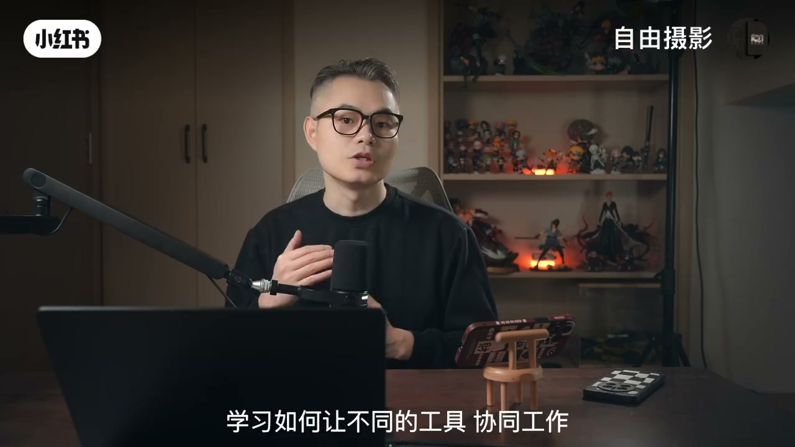
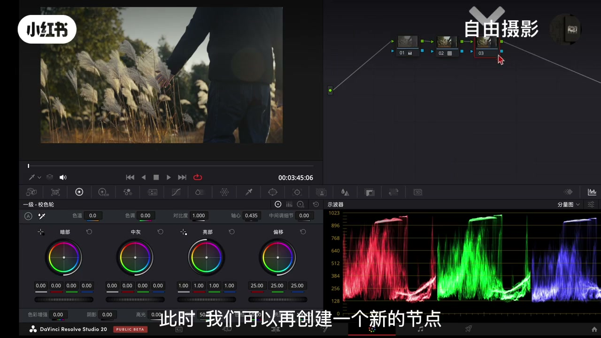
02:11-04:45曲线工具
类型：「曲线工具包含多种类型，例如色相对色相、色相对饱和度、亮度对饱和度等。以色相对色相曲线为例，它的背景是一条渐变色带，中间的线条代表当前色彩状态，如果在青色区域建立两个控制点并拖动曲线，就只会改变画面中青色部分的色相。」
扩选区：「如果需要扩大调整的影响范围，可以拖动曲线的两端的点来扩展选区，也可以增加更多的控制点或使用下方的按钮来增加拉杆调整选区的渐变与衰减幅度。如果调整的幅度过大可能导致色彩偏色或断层。」
实战：「将少量的绿色树木改为青黄色，可以先由鼠标在树木区域吸起颜色，接着将对应的锚点向上拉动，如果画面选区不够可以同时拖动左右控制点来扩大选区范围，也可以在绿色范围内增加更多控制点进行微调。曲线背景还会以类似直方图的形式呈现当前画面中各种颜色的像素分布，对应色相位置会显示凸起，这样有助于更精准的确定选区范围。」
操作顺序：「建议在套用矫正lut之后再进行局部调整，如果直接套在log素材上操作，由于原始画面色彩反差较弱，容易导致选区识别不准确或调整效果不清晰。通常可以在完成基础校正的节点之后进行微调，在后面新建一个并行节点来用以二级调色处理，还可以在节点上右键添加标签进行备注。」
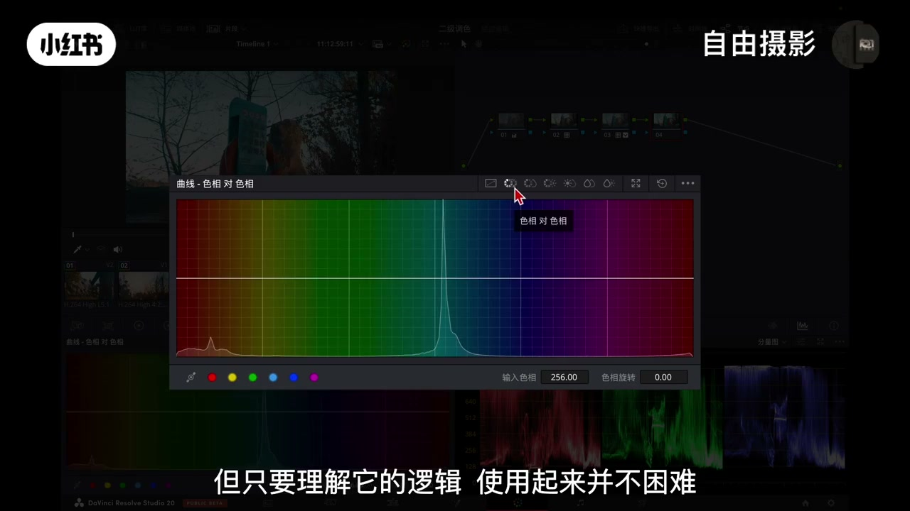
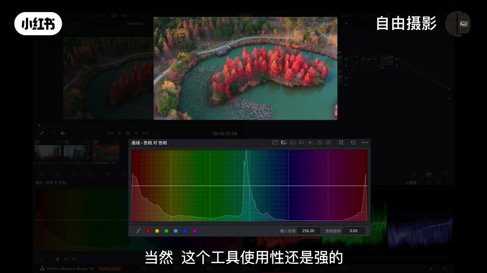
04:45-07:30饱和度与亮度曲线
色相对饱和度：「使用吸管工具吸取救生圈的原色，软件就会在曲线上自动创建相应的控制点，将曲线的控制点向上拉动就能增加救生圈的饱和度，而画面中其他区域的色彩饱和度就完全不受影响。还能创造出独特的视觉效果，比如只保留画面中的橙红色而将其他所有的色彩的饱和度都调整到零，这样的处理方式会形成强烈的视觉对比。」
色相对亮度：「专门调节特定颜色范围的明暗程度，吸管选中救生圈的颜色，曲线控制点向上拉动，画面中所有属于橙红色范围的区域主要是救生圈包括少量的树叶就会变得更亮，反过来向下拉动这些区域就会变暗，色彩也会变得更浓郁。」
亮度对饱和度：「可以分别控制不同亮度区域的饱和度，人眼对暗部色彩较为敏感，如果暗部色彩过于杂乱画面就容易显得脏不干净，所以通常会单独降低暗部饱和度，在保持风格的同时确保暗部不会显得脏乱。」
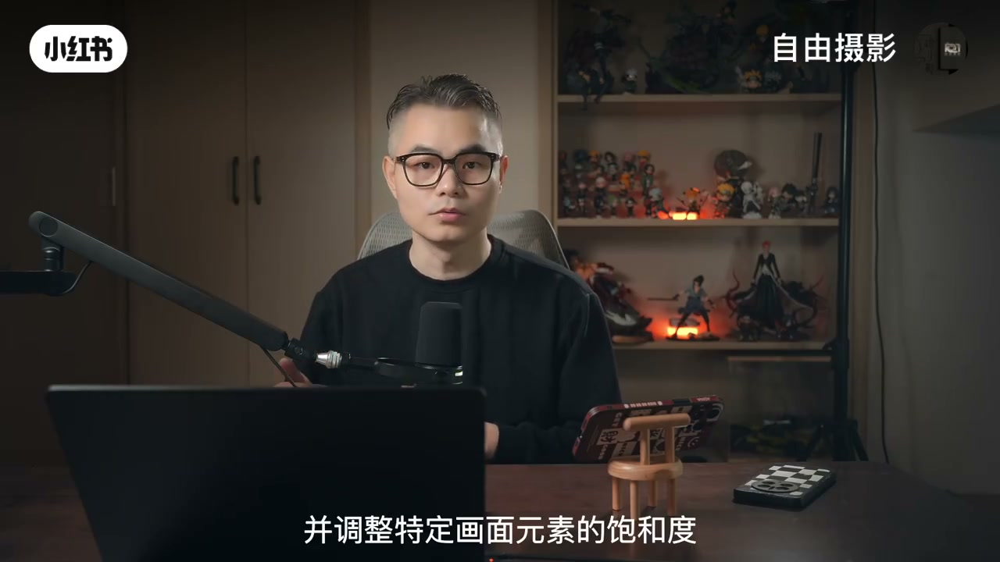
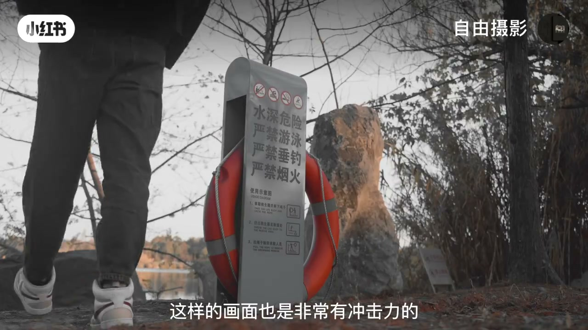
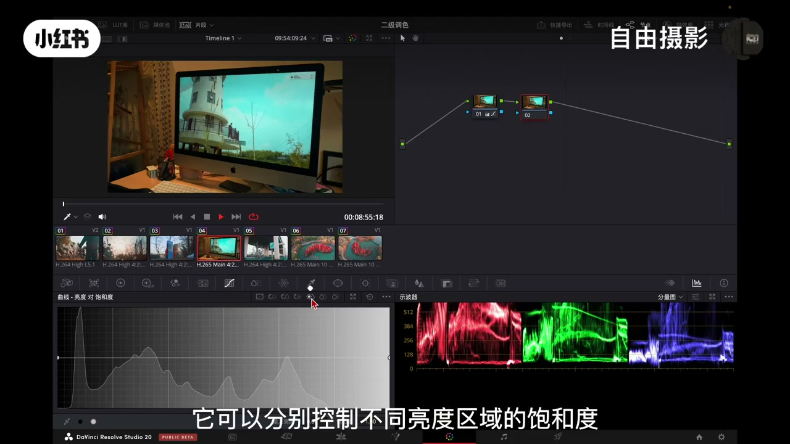
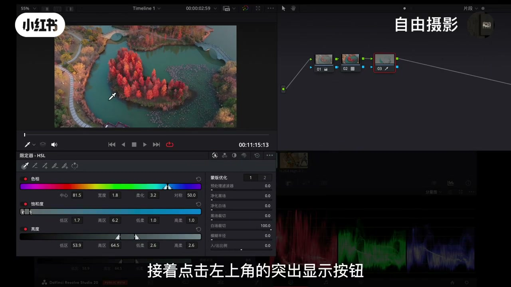
07:30-11:30限定器与多种抠像
限定器：「曲线工具虽然方便，但有时候难以精准选取到特定颜色，这时候就需要使用限定器也就是俗称的抠像工具。使用吸管工具点击想要选取的颜色，例如画面中的湖面就可以完成初步的抠像。点击左上角的突出显示按钮或使用快捷键shift加h可以快速预览单色选区范围，还可以在工具栏中选取加号或减号吸管来增加或减少范围。」
参数优化：「通过调整下方的三种参数色相、饱和度、亮度来进一步优化选区，你可以调整色相的起始点和结束位置，配合柔化与对称范围的设置让选区过渡得更加自然。还可以在右侧的门板优化功能中进一步调整选区，比如拖动羽化处理，调节黑场、白场、模糊半径来优化选区边缘，减少画面闪烁和像素断层。还可以在门板优化的第二页中调整阴影、高光与中间调，使选区的边缘区域更加干净。」
抠像方式：「亮度抠像也是常用的方法，创建一个并行节点快捷键option加p，通过吸管工具选取最暗且显脏的部分，在下方调整亮度选区范围，之后在偏移色轮中朝蓝绿色微调并适当降低饱和度，暗部变得更加干净通透。rgb抠像是通过红绿蓝三个通道的色彩信息来计算选区，适合特定色调的分离。3d抠像能同时选取多种颜色进行抠像，先抠个黄色再用加号吸管加个绿色，比较适合多种色彩区域的选取。」
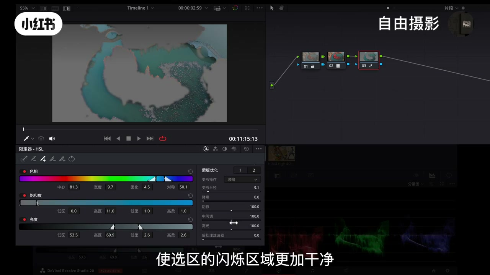
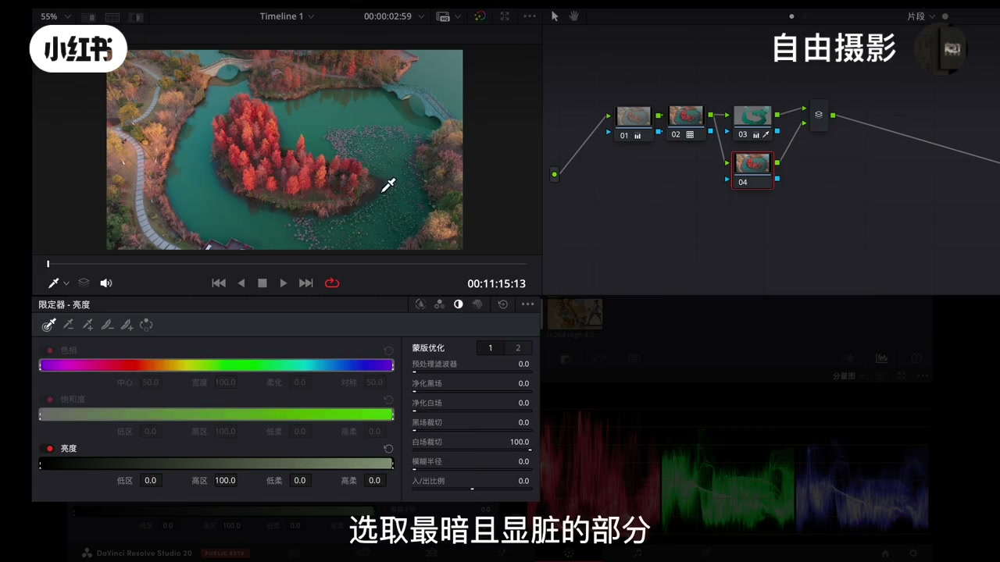
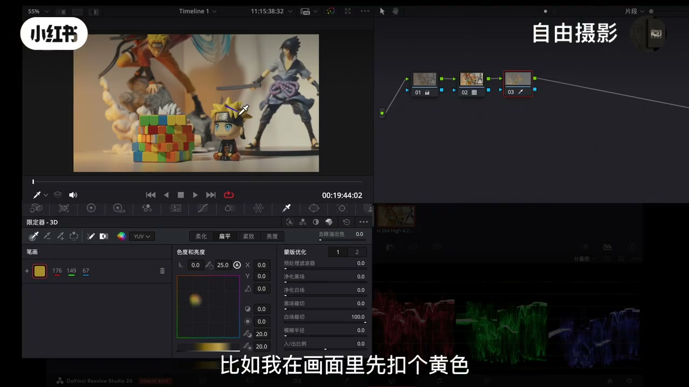
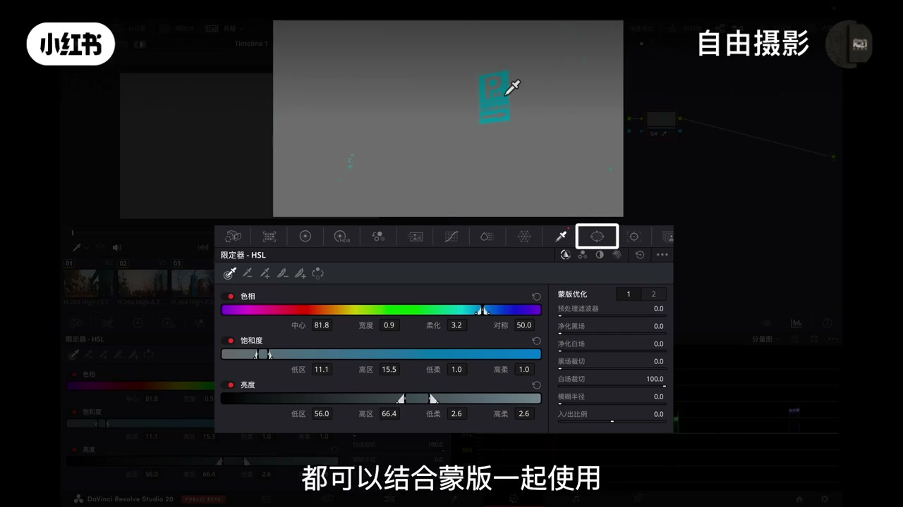
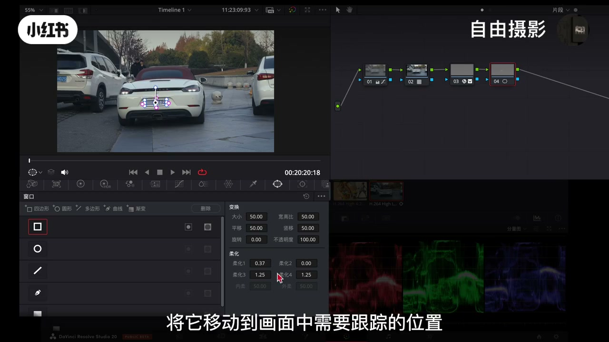
11:30-14:20门板+跟踪+遮挡处理
门板补充：「很多时候选区未必能精确限定在目标物体上，比如选择青蓝色告示牌时可能把旁边带有同样偏青色的也选了进去，这时无论是曲线还是限定器都可以结合门板一起，在同一个节点上添加一个门板，调整它的大小和形状覆盖目标物体，然后进行跟踪，遮罩门板同样可以反向使用。」
跟踪：「进入窗口门板界面，根据跟踪对象的特征选择比较适合的模板形状，将它移动到画面中需要跟踪的位置，并调整门板的大小形状以及边缘柔化程度。在跟踪面板功能中选择正反跟踪即可，达芬奇默认使用的是云跟踪，它会通过画面中大量细小的跟踪点共同运算，从而得出稳定准确的效果。完成跟踪之后可以对门板区域进行自由处理，可以在openfx效果库中找到马赛克效果直接应用，快速实现画面中特定区域的打码处理。」
遮挡：「当跟踪目标中途被其他物体遮挡，跟踪会随之失效。首先进入跟踪器面板切换到真跟踪模式，在主体被遮挡前的最后一帧将跟踪点准确放置在主体上并在此处添加一个关键帧，接着移动时间线到主体从遮挡物后方重新出现的位置，将门板重新对齐到主体，然后点击跟踪，系统会自动生成第二个关键帧，这样跟踪器就能分别完成遮挡前跟后的两段独立跟踪。」
蒙版四关键帧：「切换到门板工具窗口，第一步在主体即将被遮挡的位置将门板保持正常状态并设置关键帧，第二步在主体被完全遮挡的位置将门板缩小至几乎不可见添加第二个关键帧，接着在主体开始从遮挡物后方重新出现时保持门板最小化状态设置第三个关键帧，最后在主体完全清晰出现时将门板恢复至正常大小和位置打上第四个关键帧，通过这四个关键帧门板便实现了正常显示到隐藏再到重新显示的平滑过渡。」
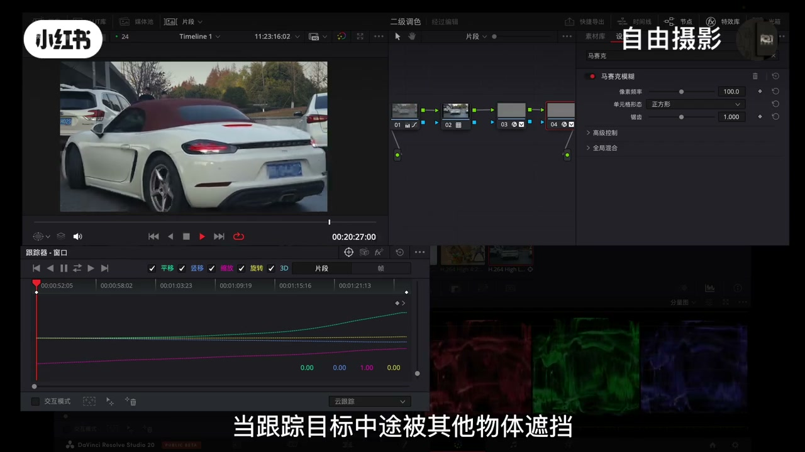
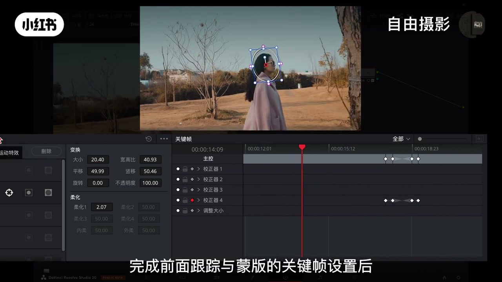
14:20-14:55AI智能抠图+创意特效
AI抠图：「达芬奇抠图最高效的功能：ai智能抠图，这个功能大幅简化了抠图流程，可以针对性的对人物的脸部、头发、衣服单独的抠出来进行调整。在画面中头发区域点击一下，ai便会自动识别并生成头发区域的门板，接着在跟踪器面板中点击正反跟踪按钮，系统就会自动完成整个片段中头发的跟踪与抠取，同时门板也支持翻转操作。使用快捷键option加p添加图层节点，点击人物脸部皮肤区域将皮肤部分单独的分离出来，继续使用option加p创建第三个图层节点对人物的衣服进行独立抠取与跟踪操作，把主体分解为衣服、皮肤、头发三个独立的节点图层。」
分层调色：「将头发调整成特别的颜色或者压暗消除泛红使发色更干净，对皮肤节点图层进行提亮美白加磨皮处理改善肤色质感，还可以在衣服节点上调整衣服的颜色与明暗，将衣服颜色压深偏向粉色调。这种ai分层抠图的调整方法使局部调色变得更加简单高效。」
创意特效：「在剪辑面板中在目标素材上添加一个字幕轨道，输入标题文字，调整好位置与大小，将下方的原始视频片段复制一份放置在文字轨道的上方，进入调色界面用ai抠图功能将人物主体抠取出来并完成跟踪，接着在节点区域空白处右键选择添加alpha输出，将抠像节点的蓝色输出线连接到这个alpha输出端口。回到剪辑界面给标题文案加一个入场效果，选中文字图层右键选择新建复合片段，在效果库中选择一个入场的转场效果拖拽到文字图层的开始位置，就可以清晰看到文字已经在人物后方形成前景人物、文字与背景的视觉层次。」
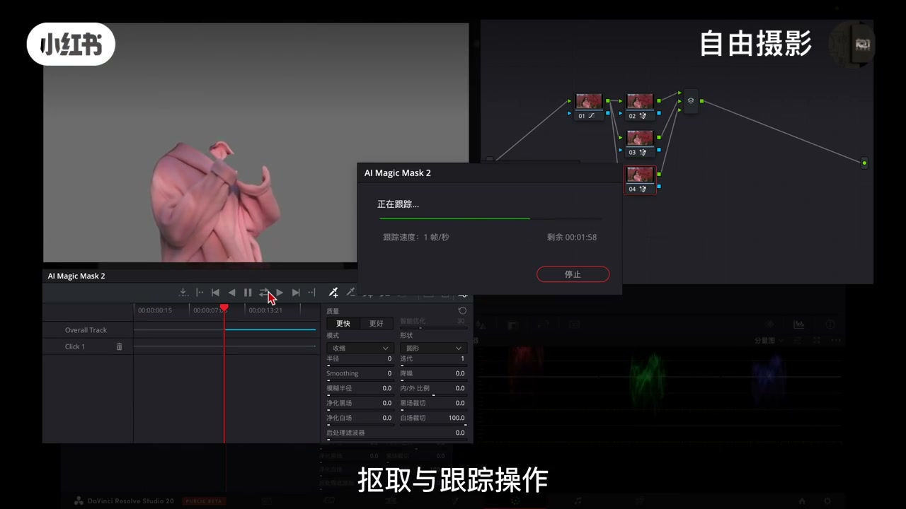
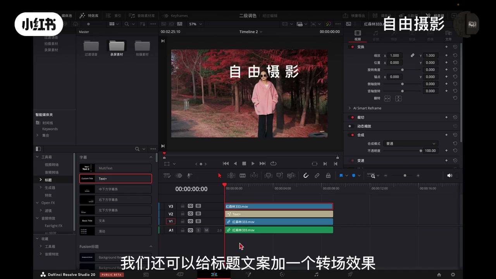
完整转录（137段）
以下文本由 Whisper medium 模型自动转录，可能存在少量识别误差，已尽可能修正。
大家好 欢迎来到自由摄影 如果你一路跟到了这里 并且扎实掌握了前面的内容 从理解log画面
进行一级调整到区分绝点应用纳的和调色基础 那么恭喜你 你已经搭好调色最重要的基石
接下来 我们要进入一个富含创意 更需要精细控制的阶段
二级调色 这里的挑战不再是整体校正 而在于如何分离画面中不同元素 比如人物
观影 环境 并对他们进行独立精准的塑造 这正是调色从校正走向创作的关键一步
所以这节课 我们会聚焦在分离本身 我将带你系统掌握多种局部调整的思路和技巧
学习如何将不同的工具协同工作 干净利落的锁定你想调整的区域 目标很明确 让你不仅知道二级调色是什么
更能自信的动手实现脑海中的画面 好的 那我们就直接进入主题吧
首先 二级调色的目的是对画面特定部分进行独立调整 无论是人物的肤色
环境色还是某个物体都属于这个范畴 它通常发生在整体基本色调确定好之后
比如这里有一个由索尼a七c二拍摄的素材 我知道它采用的是s六个三曲线
在调色时 我会先创建一个节点 应用s六个三转gammac你的色彩转换latt
这一步在上一节课已经详细讲解过 接着在第一个节点 也就是应用矫正latt之前 我会先调整全极曝光和白平衡
确保画面在矫正阶段没有过暴或偏色
经过这一系列操作 我们就能得到一个色彩以明暗都属于正常的画面 此时我们可以再创建一个新的节点
再套用一个风格latt 比如模拟胶片色调 套用latt之后 画面通常已具备不错的基调 但latt并非万能
往往还需要手动微调 我可能会通过设轮压低高光和提亮暗部 让画面显得更干净
有时也会进入键输出界面 调整latt的浓度 降低它的强度 使它更贴合单线素材
只有完成这些步骤 我们才能获得一个比较理想的整体色调 也为后续的二级调色奠定扎实的基础
在确定整体基本色调后 画面中还可能存在个别影响观感的元素 例如某些部分的饱和度过低或过高
如果想单独调整画面中的某个元素 比如告示牌就需要通过二级调色进行局部处理
这里先介绍两种较为直接的局部调整工具 曲线与限定器
曲线工具包含多种类型 例如摄像对摄像 摄像对饱和度 亮度对饱和度等
这些名称虽有一定的规律 但只要理解它的逻辑 使用起来并不困难
以摄像对摄像曲线为例 它的背景是一条渐变色带 中间的线条代表当前色彩状态
如果在轻色区域建立两个控制点并拖动曲线 就只会改变画面中轻色部分的摄像操作非常直观
如果需要扩大调整的影响范围 可以拖动曲线的两端的点来扩展选区
也可以增加更多的控制点或使用下方的按钮来增加拉杆调整选区的渐变以衰减幅度
需要注意的是 如果调整的幅度过大 可能导致色彩偏色或断层
从而影响画面观感 当然 这个工具使用性还是很强的
例如在这个画面中 我们需要将少量的绿色树木改为青黄色 可以先由鼠标在树木区域吸起颜色
接着将对应的毛点向上拉动 如果发现画面选区不够 可以同时拖动左右控制点来扩大选区范围
也可以在绿色范围内增加更多控制点进行微调 直到达到满意的效果
曲线背景除了显示摄像 还会以类似直方图的形式呈现当前画面中各种颜色的像素分布
例如画面中除了有青色 还有橙黄色元素 对应摄像位置就会显示凸起
还有在这个画面里有青绿色和橙红色元素 相应位置也会显示凸起 这样有助于我们更精准的确定选区范围
此外 也可以直接使用吸管工具在画面上取样 系统会自动生成选区
操作时需要注意顺序 建议在套用矫正蜡的之后再进行局部调整
如果直接套在log素材上操作 由于原始画面色彩反差较弱 容易导致选区识别不准确或调整效果不清晰
因此 通常可以在完成机组校正的节点之后进行微调
在后面新建一个平行节点来用以二级调色处理 为了更好的记住每个节点的作用 还可以在节点上右键添加标签进行备注
例如在这个节点上标注树木调整 在下方这个节点标注湖面调整等
养成这样的操作习惯 有助于在调色时能保持清晰的操作逻辑
理解了摄像对摄像的曲线工作原理后 摄像对饱和度曲线的使用就很容易掌握了
这时我经常使用的工具之一 它可以让我们精确的选择并调整特定画面元素的饱和度
例如如果我想提升画面中救生圈色彩饱和度 只需要使用吸管工具吸取救生圈的原色
软件就会在曲线上自动创建相应的控制点 这时我只需要将曲线的控制点向上拉动
就能增加救生圈的饱和度 同时根据需要通过调整控制点的位置来微调选区范围
而画面中其他区域的色彩饱和度就完全不受影响 这个工具不仅能用以常规的色彩增强 还能创造出独特的世界效果
比如我只保留画面中的橙红色 而将其他所有的色彩的饱和度都调整到零
这样的处理方式会形成强烈的视觉对比 这样的画面也是非常有冲击力的
实际上 这些曲线的操作原理相通 掌握一种后就能轻松理解其他几种
手动操作一下 你就能明白 比如这个色相对亮度 它的功能是专门调解特定颜色范围的明暗程度
我们同样在画面中用吸管工具选中救生圈的颜色 软件会在橙红色对应的摄像位置上生成控制点
这时将曲线的控制点向上拉动 画面中所有属于橙红色范围的区域
主要是救生圈 包括少量的树叶就会变得更亮 反过来向下拉动 这些区域就会变暗 色彩也会变得更浓郁
另外一条我常用的曲线是亮度对饱和度 它可以分别控制不同亮度区域的饱和度
人眼对暗部色彩较为敏感 如果暗部色彩过于杂乱 画面就容易显得脏不干净
所以这里我通常会单独降低暗部饱和度 在保持分过的同时 这样确保暗部不会显得脏乱
曲线工具虽然方便 但有时候难以精准选取到特定颜色 这时候就需要使用限定器 也就是俗称的抠向工具
如果你之前使用lightroom或photoshop就能很快熟悉它的操作
首先我们在这里新建一个节点 使用吸管攻击 点击想要选取的颜色 例如画面中的湖面就可以完成初步的抠向
接着点击左上角的突出显示按钮或使用快捷键shaf的加h可以快速预览单权选区范围
如果发现湖面抠的不够理想 还可以在工具栏中选取加号或减号吸管来增加或减少范围
操作直观异动 如果仅靠吸管攻击还是不够精确 可以通过调整下方的三种参数
摄像 饱和度 亮度 来进一步优化选区 你可以调整摄像的起始点和结束位置
配合柔化以对称范围的设置 让选区过度的更加自然
下方饱和度和亮度的调整还可以锁定更具体的选区范围
你还可以在右侧的门板优化功能中进一步调整选区 比如拉动易处理力波去
调解黑场 白场 模糊半径来优化选区边缘 减少画面闪烁和像素断层
如果这些调整不够的话 还可以在门板优化的第二页中调整阴影
高光以中间调 使选机的闪烁区域更加干净
假如选机调整完成后 你还可以进行反向操作 从而更灵活的控制抠向区域
完成湖面选机的精确抠向后 我们可以使用设轮工具进行进一步调整 将偏移色轮向蓝绿色方向调节
可以使湖面显得更绿 更纯净 调整完成后 还可以关闭选区预览 在节点上对比前后效果
检查是否达到一级的画面表现 除了hsl抠向 还有其他几种抠向方式
这里我们先来讲亮度抠向 亮度抠向也是我常用的方法
例如在这个画面中 我们在这里创建一个并行节点 快捷键out加p 通过吸管攻击选取最暗且显脏的部分
在下方调整亮度选区范围 之后在偏移色轮中朝蓝绿色微调
并适当降低饱和度 通过开启和关闭节点对比 能看到暗部变得更加干净通透
我们再回过来看第二种rgb抠向 顾名思义 它是通过红
绿蓝三个通道的色彩信息来计算选区 适合特定色调的分离
特别需要强调的是最后一种3d抠向 它能同时选取多种颜色进行抠向 比如我在画面里先抠个黄色
再用加号吸管加个绿色 我们将抠出来的画面随意调整一下颜色 这时就可以看到画面的效果了
如果扣除的颜色不够理想 我们还可以用加号吸管吸得干净一点 那这个3d抠向比较适合多种色彩区域的选取
爽的来说 抠向方法多样 你可以根据画面需求灵活选择
结合优化参数调整 让选区更加干净精准 当然很多时候选区未必能精确限定在目标物体上
比如选择青蓝色告示牌时 可能把旁边带有同样偏青色的也选了进去 这时无论是曲线还是限定器都可以结合门板一起使用
你可以在同一个节点三添加一个门板 调整它的大小和形状
覆盖目标物体 然后进行跟踪 在大多数情况下 达分级都能生成不错的门板效果 遮罩门板同样可以反向使用 只需要在窗口下方点击圆形按钮就可以翻转
既然已经提到了跟踪器 接下来我们具体看一下跟踪门板的操作
在达分级中 基本的跟踪功能设计的非常直观 你只需要先创建一个节点
然后进入窗口门板界面 根据跟踪对象的特征 选择比较适合的模板形状 将它移动到画面中需要跟踪的位置
并调整门板的大小 形状以及边缘柔化程度 接着回到跟踪界面
在跟踪面板功能中 选择正反跟踪即可 达分级默认使用的是云跟踪
它会通过画面中大量细小的跟踪点共同运算 从而得出稳定准确的效果
在大多数情况下 默认的跟踪设置已经能够满足常见的需求
完成跟踪之后 你就可以对门板区域进行自由处理 无论是调色还是添加其他的效果都非常方便
例如你可以在openx效果库中找到马赛克效果 直接应用到跟踪好的门板上
就可以快速实现画面中特定区域的打码处理
还有一个常见的实际跟踪问题 当跟踪目标中途被其他物体遮挡
例如主体被行人或树木遮挡 跟踪会随之失效 这种情况我们需要分两个步骤来解决
首先进入跟踪器面板 切换到真的跟踪模式 在主体被遮挡前的最后一针 将跟踪点准确放置在主体上
并在此处添加一个关键针 接着移动时间线到主体从遮挡物后方重新出现的位置
将门板重新对齐到主体 然后点击跟踪 系统会自动生成第二个关键针 这样跟踪器就能分别完成遮挡前跟后的两段独立跟踪
完成跟踪面板的基础定位后 我们需要切换到门板攻击窗口 对遮挡物体位置的遮罩进行单独调整 避免后期提亮主体肤色等操作出现穿帮
第一步 在主体即将被遮挡的位置将门板保持正常状态并设置关键针
第二步 在主体被完全遮挡的位置将门板缩小至几乎不可见 添加第二个关键针 这样门板会在遮挡期间自动隐藏
接着 在主体开始从遮挡物后方重新出现时
先在当前位置保持门板最小化状态 设置第三个关键针 最后在主体完全清晰出现时将门板恢复至正常大小和位置
打上第四个关键针 通过这四个关键针 门板便实现了正常显示到隐藏
再到重新显示的平滑过度 完成前面跟踪以门板的关键针设置后
可以继续使用限定器对人物肤色进行抠出 进行肤色优化 膜皮或提亮等操作
实现更精细的效果处理 在掌握这些基础方法后 最后我们来认识一下达芬奇抠图最高效的功能
ai智能抠图 这个功能大幅简化了抠图流程 可以针对性的对人物的脸部
头发衣服单独的抠出来进行调整
例如在这个画面 首先新建一个校正节点 在画面中头发区域点击一下ai便会自动识别并生成头发区域的门板
接着 在跟踪器面板中点击正反跟踪按钮 系统就会自动完成整个片段中头发的跟踪以抠取
同时 门板也支持翻转操作 进一步扩展了使用的灵活性 在使用快捷键奥特加p添加一个新的涂层节点
点击人物脸部皮肤区域 将皮肤部分单独的分离出来 并同样点击跟踪按钮应用至整个片段
继续使用奥特加p创建第三个涂层节点 以相同的方法对人物的衣服进行独立抠取以跟踪操作
通过这样的操作 我们把一个完成的主体分解为衣服 皮肤 头发
三个独立的节点涂层 这样针对性的调色就简单了 你可以将头发调整成特别的颜色
或者压暗 消除放红 使发色更干净 对皮肤节点涂层进行提亮
美白挤 抹皮处理 改善肤色质感 同时还可以在衣服节点上调整衣服的颜色以明暗 将衣服颜色压深偏向粉色调
这种ai分层抠读的调整方法 使局部调色变得更加简单 高效
ai智能抠读 除了用以局部调色 也能帮助我们实现一些创意的世界特效
比如 首先在剪辑面板中 在目标素材上添加一个字幕轨道 在打开右上角的检查器窗口输入标题文字
选择适合的字体 并调整好它的位置以大小
调整好之后 将下方的原始视频片段复制一份 并放置在文字轨道的上方
随后进入调色界面 对复制的这一层视频 使用ai抠读功能 将人物主体抠取出来并完成跟踪
接着在节点区域空白处右键 选择添加阿法输出
将扣向节点的蓝色输出线连接到这个阿法输出端口 完成这几个步骤后 回到剪辑界面 我们还可以给标题文案加一个转产效果
先选中文字图层 右键选择新建复合片段 然后在效果库中选择一个入产的转产效果
将它拖拽到文字图层的开始位置 在播放预览就可以清晰看到文字已经在人物后方形成前景人物
文字以背景的视觉层次 这样的效果也是非常不错的 无论是抠像奢造
跟踪还是ai智能攻击 根本目的都是为了实现对画面局部区域的精确控制 大家